直近1週間の更新
5/17 (土)

スクラムフェス金沢2025の打ち合わせ(22回目)に参加してきた  天の月
天の月
aki-m.hatenadiary.com スクラムフェス金沢2025に向けた準備をしてきたので、会の様子を書いていこうと思います。 香盤表確認 セッション調整 スポンサーブース設営 キャッシュ・フロー確認&更新 香盤表確認 自分をはじめとしたスクラムフェス新潟に参加していたメンバーが前回の運営MTGに参加することができていなかったので、そのときに作った香盤表を確認しました。 結論、特に問題もなく、調整しなくても良さそうだという話になりました。 セッション調整 採択している中さんのセッションを延長したいという話がご本人からあったのですが、それができるのか？という話をまずしていきました。 結論、…
1時間前

ソフトウェアテストの代表的な手法とテスト工程まとめ  Zennの「QA」のフィード
Zennの「QA」のフィード
ソフトウェアテストの代表的な手法とテスト工程まとめソフトウェア開発において「テスト」は、品質を確保しバグを防ぐために欠かせない工程です。本記事では、よく使われるテスト手法とテスト工程の違い・特徴を、初心者にも分かりやすく整理します。 📝 主要用語の簡単な説明テスト手法テストをどのような観点や方法で行うか（例：ホワイトボックステスト、ブラックボックステストなど）テスト工程開発のどの段階・粒度でテストを行うか（例：単体テスト、結合テスト、システムテスト） 🛠 テスト工程の概要 テスト工程の流れ🟦 単体テスト（ユニットテスト）小さい単位（...
8時間前
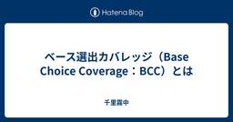
ベース選出カバレッジ（Base Choice Coverage：BCC）とは  千里霧中
千里霧中
ベース選出カバレッジ（ベースチョイスカバレッジ、Base Choice Coverage、BCC）は、組み合わせテストのカバレッジの一種です。有用なカバレッジ基準ですが、執筆時点で日本語情報が少なかったため、情報をまとめます。 ベース選出カバレッジとは ベース選出カバレッジは、組み合わせテストにおいて、パラメータにベースとなる重要な値がある場合に適用します。このベースとなる値は、最も重要な値、ハッピーパスの値、デフォルトとして選ぶべき値が該当します。 ベース選出カバレッジ100%の組み合わせは、このベースの値を基準に、次のように作成します。 各パラメータからベースを選出した組み合わせを作る。こ…
9時間前
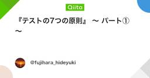
『テストの7つの原則』 〜 パート① 〜  ソフトウェアテストタグが付けられた新着記事 - Qiita
ソフトウェアテストタグが付けられた新着記事 - Qiita
はじめに現在、アプリ開発者としてプロダクトの持続的な成長やユーザーへのコミットに寄与するためにも、SDLC全体を見渡して開発をすること、および、それにはテストに関する体系的な知識が必要だと考…
12時間前
5/16 (金)
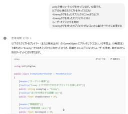
プログラミング初心者ほど趣味のVibe codingをしよう  テスターちゃん【4コマ漫画】
テスターちゃん【4コマ漫画】
現在、趣味で横シューティングゲームを作っています。 これはVibe codingという手法……もといノリで作っていますので、今日はその辺の話をします。 Vibe codingとは 妄想したことを伝えるとそれ通り動くものができる世の中になった プログラミング初心者ほど趣味のVibe codingをしてみるといい 以下はおまけ。思い浮かぶままに。 バグの直し方 それでもうまく直せないバグは一からやり直す 即興で作っているのでテストコードが書きにくい 慣れているつもりでも「え、そんな書き方があったの」が出てきて学べる レビューやテストの重要性が増す Vibe codingとは Vive coding…
1日前
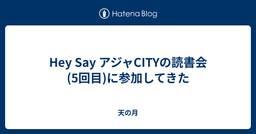
Hey Say アジャCITYの読書会(5回目)に参加してきた 天の月
表題のイベントに参加してきたので、会の様子を書いていきます。今回もホンダ流のワイガヤのすすめを読んでいって今回が最後でした。 テーマのバランス 批判と個人攻撃を区別する 大企業体質×わいがや わいがやに参加している年齢層の広さ 無駄話から本題へ切り替わるタイミングの早さ 複雑なことを単純な認知にしていきたくなる理由 テーマのバランス テーマはかなり抽象的なところからスタートしていましたが、突拍子もないテーマだとも思いそうだし、途中で収束を挟んでいたところからも一定はテーマのスコープを定めてあげるような取り組みが必要なんだろうという話をしていきました。 批判と個人攻撃を区別する 例えば若者のこと…
1日前
本当に必要なセキュリティ対策の勘所（AWSぶっちゃけ討論会vol.3 ）  SHIFT EVOLVE グループの新着イベント
SHIFT EVOLVE グループの新着イベント
開催日時: 2025/06/05 19:30 ～ 20:50<br />開催場所: オンライン<br /><br /><h2>本当に必要なセキュリティ対策の勘所（AWSぶっちゃけ討論会vol.3 ）</h2><p>AWSにおけるセキュリティ運用について、ベンダー、エンドユーザーの有識者を招いて本音ベースで最適解をディスカッション</p><p>AWS All Certifications Engineersで、SHIFTのCCoEをリードする大瀧が、外部からエキスパートを招いて質問をぶつけ、教科書に載っていない、検索しても出てこない、AWSセキュリティのリアルな現実を掘り下げます。</p><p>今回のお相手は株式会社サイバーセキュリティクラウド 山本 純氏と、三井住友ファイナンス&amp;リース株式会社 森本 悠太氏。 「本当に必要なセキュリティ対策の勘所」をテーマに「本当に必要な対策をどう見極めるか？」「サードパーティ製品の必要性はなにか？」「セキュリティ人材...
1日前
5/15 (木)
アジャイルカフェ@オンライン 第72回に参加してきた 天の月
agile-studio.connpass.com こちらのイベントに参加してきたので、会の様子と感想を書いていこうと思います。 agile-studio.connpass.com 会の概要 会の様子 前提 見積もりの目的 見積もりのやり方 No Estimate Q&A タスクも相対見積もりするのが人気か？ 実装を始めてから見積もりよりも大変なことが分かったらどうする？その逆は？ プロダクトリリースまでの見積もりに対して進捗状況を知る方法はバーンダウンチャート以外にあるか？ 会全体を通した感想 会の概要 家永さん天野さんじょうさんの3人のアジャイルコーチが、アジャイル実践者から寄せられた質問…
2日前
5/14 (水)
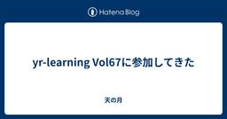
yr-learning Vol67に参加してきた 天の月
yr-learning Vol67 - connpass こちらのイベントに参加してきたので、会の様子と感想を書いていこうと思います。 BuilderパターンでGameStatusをBuildしてみる 次回以降の予定決め BuilderパターンでGameStatusをBuildしてみる Builderパターンを使って、GameStatusをBuildしてみるようにしました。Typescriptで書いていましたが、どちらかというとOOPチックに書いてみて、こんなものかなというのを途中途中で議論しながら作りました。 そもそも今のタイミングでBuilderパターンを書く必要があるのかという話や、Bu…
3日前
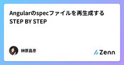
Angularのspecファイルを再生成するSTEP BY STEP Zennの「Test」のフィード
Angularでは、 ng コマンドで作成したコンポーネントやサービス、Pipeには（特に設定しない限り）テスト設定用にspecファイルが自動生成されます。 ただ、長くランニングしてるプロジェクトだと、テストが通らないというのはまぁいいとはして、無理やり通すためにspecファイルを削除してしまっているというのがあったりなかったり。私が持ってる昔からのプロジェクトでもあったりなかったり。生成AIで初期ファイルは自動生成したいと思ったので、再生成するためのガイドラインを（主に私が生成AIに情報を食わせるために）まとめておきます。 STEP BY STEP 1. specファイルがな...
3日前
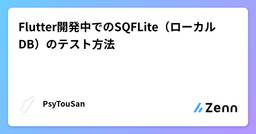
Flutter開発中でのSQFLite（ローカルDB）のテスト方法
Zennの「Test」のフィード
私は、Flutterにおけるローカルデータの保存には、SQFLiteパッケージを使用してデータベース操作を行う場合が殆どです。https://pub.dev/packages/sqfliteクエリの実行内容や、トランザクション処理に変更を加えた時などに、いちいち実機を立ち上げてテストするのは非常に面倒ですので、一括でテストが回せたら非常に便利です。私の備忘録として残しておきます。 サンプルコードテストには、sqfliteに加えて以下のパッケージが必要ですので、インストールしてください。https://pub.dev/packages/sqflite_common_ffi...
3日前
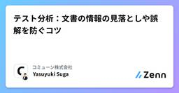
テスト分析：文書の情報の見落としや誤解を防ぐコツ Zennの「QA」のフィード
はじめに以前こちらの記事で言及した通り、プロジェクトの内容（テスト対象の情報）を正しく理解できていないことはテスト漏れの原因になります。読みやすいドキュメントを準備するなどして関係者の認識齟齬を防げるのが理想ですが、リソースやスキル不足など何らかの原因で読みやすいドキュメントを準備するのが難しい場合もあります。そこで本記事では、ドキュメントの記載内容に対して見落としや誤解を防ぐためのコツをいくつかご紹介します。なお、実際の業務ではドキュメントに記載のない情報を追加で集めたり、ドキュメントを読んで仕様の問題点を指摘できる必要がありますが、本記事の対象外となります。 読んだ内...
4日前
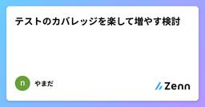
テストのカバレッジを楽して増やす検討 Zennの「Test」のフィード
カバレッジを増やすにはテストを増やすのが一般的でしょうか。テストを増やさずにカバレッジを増やせないか検討してみました。（既にこのような考えがあれば、すでにあるよ！って言ってください）今回考えた事：コードにちょっとした仕掛けを入れて、if文の分岐を無理やり曲げて、C0カバレッジの％を増やしたい。 同じ実行だけど違う分岐ができないかC++のコード、１～９までを全部通したい#include <stdio.h>/* ここに仕掛けを入れる予定 */int func(int i){ printf("func %d passed\n",i); return ...
4日前
5/13 (火)
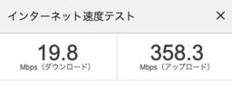
大人のソフトウェアテスト雑談会 #269【笹団子】に参加してきた 天の月
https://ost-zatu.connpass.com/event/354733/ 今週もテストの街葛飾に行ってきたので、会の様子と感想を書いていこうと思います。 スクラムフェス新潟 おおひらさんの声品質 全体を通した感想 スクラムフェス新潟 色々な人が登壇していたので、印象的だったセッションの話をしていきました。やましたさんのセッションや自分のセッションの話が挙がっていて、自分のセッションはここで挙げてくれると思っていなかったのでとても光栄でした。(ただしやましたさんは自分のようにはなりたいとは思わなかったそうです笑) また、各々が楽しかった思い出話だったり、葛飾にゆかりがある人の近況に…
4日前
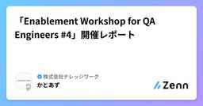
「Enablement Workshop for QA Engineers #4」開催レポート Zennの「QA」のフィード
株式会社ナレッジワークのQAエンジニア Katoazです。本記事では2025年4月22日に開催した勉強会 Enablement Workshop for QA Engineers #4~QAのスキルアセスメント・キャリアラダー~ の開催レポートをお届けいたします。 ワークショップの趣旨Encraft（エンクラフト）は株式会社ナレッジワークが提供する、 「Enablement」と「Craftsmanship」をテーマにした勉強会です。技術にこだわりを持つ人々が集まって互いに知見を交換し、できることを増やしていく場を提供します。そして、Enablement Workshop for...
5日前
5/12 (月)
スクラム祭りの打ち合わせ(37回目)をしてきた 天の月
aki-m.hatenadiary.com こちらの打ち合わせをしてきたので、会の様子と感想を書いていこうと思います。 キャッシュ・フロー更新 趣意書の更新箇所説明 バックログのリファインメント Keynote Speakerを確定する 売り出すチケットの種類を決める&Eventbrightでチケット販売開始 サテライトの地域を確定させる スポンサー申し込んでもらっている方々からロゴをもらう&HPに反映させる ドラフト会議の日程や段取りを確定する Discordのチャンネル設計を決める HPの更新箇所を洗い出す キャッシュ・フロー更新 ありがたいことにスポンサーが増えていたのでキャッシュ・フロ…
5日前
Str::uuid()をモックする(固定値を返すようにする) Zennの「Test」のフィード
結論モックは難しいので以下で対応するStr::createUuidsUsing(function () { return Uuid::fromString('eadbfeac-5258-45c2-bab7-ccb9b5ef74f9');});引用元: https://readouble.com/laravel/11.x/ja/strings.html
5日前

時短・フレックス・子育て──SmartHRのQAエンジニアの実践録 2
2 QA - SmartHR Tech Blog
QA - SmartHR Tech Blog
こんにちは！QAエンジニアのhigesawaです。 今回は普段のQA文脈の発信とは趣を変えて、自身の最近の経験を踏まえたワーク・ライフ・バランスについて書いてみようと思います。 はじめに 私は現在品質保証部の中で労務ユニットAに所属しています。 以前当テックブログの品質保証部連載にて記載した SmartHR 品質保証部 労務ユニットAの紹介 にもある通り、労務ユニットAのメンバーの多くは開発チームに所属せずプロダクト横断的に、濃淡をつけた品質保証活動をしています。その中で私は、今年に入ってからは年末調整機能の開発チームに濃度高めで関わっている状況です。 プライベートでは3人家族の一児の父で、こ…
5日前

JaSST’25 Tokyoでの発表資料を公開しました！  ブログ - WACATE
ブログ - WACATE
先日開催されたJaSST’25 TokyoでWACATE実行委員会が発表した資料を公開しました！ この資料は、元々公開する予定ではありませんでした。 しかし今度のWACATE 2025 夏を開催するにあたって続きを読む投稿 JaSST’25 Tokyoでの発表資料を公開しました！ は WACATE に最初に表示されました。
5日前
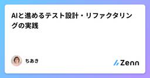
AIと進めるテスト設計・リファクタリングの実践 134 Zennの「Test」のフィード
以前作成した冷蔵庫マネージャー、レビューとリファクタリングをしようしようと思いながら後回しになっていたのですが、つい先日参加したイベントでAIとのリファクタリングのコツを教えてもらったので、教えてもらったことをもとにやってみることにしました。前提（例：あなたは〜です）目的（例：これから〜を実装します）前準備（例：まず〜を把握してください）タスク（例：調査結果をマークダウンファイルにしてください）制約（例：コードの変更を禁止する など）これを意識してリファクタリングをしていきます。ちなみに今回もCursorとペアプロ形式で進めています。 1. ドキュメントを作る生成...
5日前
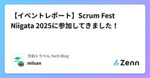
【イベントレポート】Scrum Fest Niigata 2025に参加してきました！ Zennの「QA」のフィード
はじめにこんにちは。令和トラベルのエンジニアリングマネージャー、QAグループマネージャーの miisan です！2025年5月9日（金）〜10日（土）に新潟で開催された「Scrum Fest Niigata 2025」に初めて参加してきました！現地でお話しさせていただいた皆様、運営の皆様、ありがとうございました！この記事では、今回のカンファレンスにおいて印象に残った内容や、会場での様子を交えてイベント内容を振り返りたいと思います。 Scrum Fest Niigata 2025 カンファレンス概要!Scrum Fest Niigataとはスクラムフェス新潟はア...
5日前
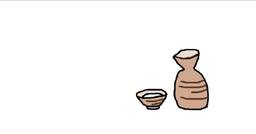
スクフェス新潟2025に参加した。  pikazakipika
pikazakipika
スクフェス新潟2025にオンライン参加した。www.scrumfestniigata.org濃かった、いろいろ学べたし伸びしろを感じた。また参加したい、そしてできれば現地に行きたい。日本酒飲みたい。続きをみる
6日前
5/11 (日)
スクラムフェス新潟Day2に参加してきた 天の月
www.scrumfestniigata.org スクラムフェス新潟Day2に参加してきたので会の様子と感想を書いていこうと思います。(WIP) Ryoさんと話す moriyuyaさんと話す moriyuyaさん川口さんHiroさんと話す いくおさんびばさんと話す 登壇 Ryoさんと話す 裏番組だったRyoさんと話をしていきました。Ryoさんはスライド作成の型の完成系に近づいたと今回の発表で感じてたそうですが、スライドが20枚ちょいと少なかったので、1ページあたりどれくらい話すつもりか聞いた所、話そうと思えばいくらでも話せると思っているということで、むしろこれ以上スライドを増やすと時間オーバー…
6日前
Playwrightに関するメモ⑤現時点での学習内容をGitHubにまとめ中
156
GitHub自体も今まで業務も含めて使用したことがないため、GitHubの使い方自体もChatGPTに聞きつつまとめている続きをみる
6日前
お知らせ：申込み締め切り変更（6/8まで） ブログ - WACATE
WACATE2025夏の申込み締め切りの変更をお知らせします。参加の申し込み締め切りは6/8(日)とさせていただきます。 当初の申込み締め切りよりも前倒しとなり申し訳ございません。 WACATEは宿泊型のワークショップで続きを読む投稿 お知らせ：申込み締め切り変更（6/8まで） は WACATE に最初に表示されました。
6日前
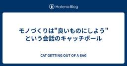
モノづくりは"良いものにしよう"という会話のキャッチボール 1 CAT GETTING OUT OF A BAG
この記事は、システムのある機能（機能a）のふるまいを変更したときに「テストが足りないかも？」と思ったテスターが、実装者のプログラマーMさんと会話したときの記録です。一部ハイコンテクストで非常にわかりづらいので、まずはじめに会話の概要とこの記事で伝えたいことを書いておきます。 開発現場での会話が、miwaのシステムの内部設計の理解を助け、お客さまの現場での製品の使われ方をMさんが深く知るきっかけになった。miwaが知りたいと示した内容から、Mさんは自分が当たり前に知っていることを自認し、同時に相手（miwa）が知り得ないことに気づく。心配性のmiwaは気がかりをMさんに伝える。その心配はMさんに…
6日前